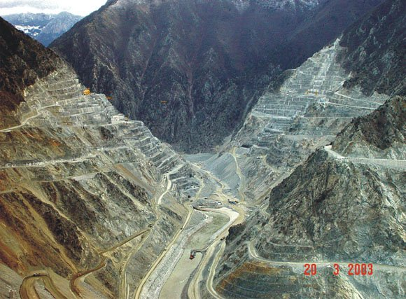
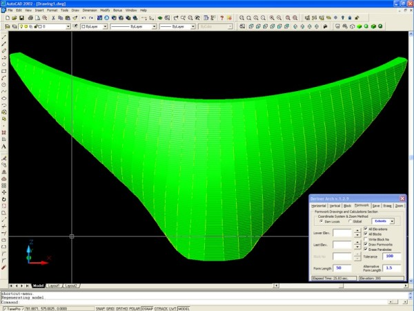
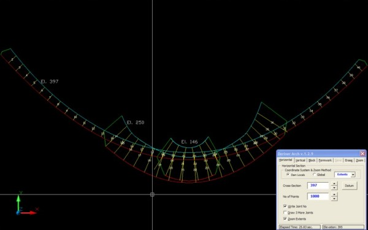
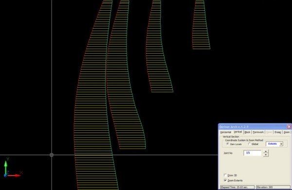
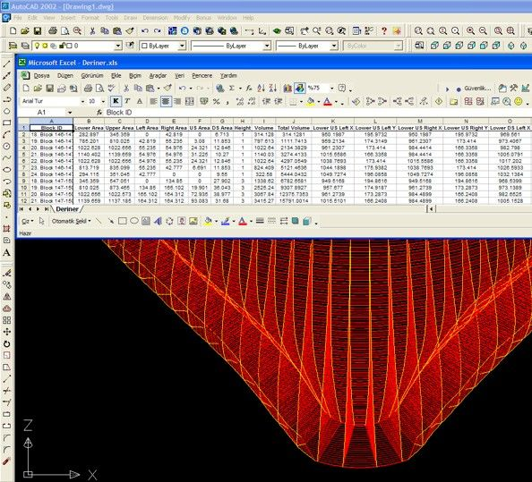

|
Deriner
Barajý ve HES; ülkemizin en büyük, dünyanýn ise 3. büyük kemer
gövde barajýdýr. Bu baraj, Dünya'nýn en yüksek debili ikinci
akarsuyu olan Çoruh Nehri üzerinde inþa edilmektedir. Gövde
yüksekliði temelden 253 metredir, taban geniþliði 150 metre,
kret (en tepe) uzunluðu 720 metredir. Gövde yaklaþýk 2000
ano (ayrý döküm bloklarý) dan oluþmaktadýr ve toplam beton
hacmi 3.5 milyon m3 dür. Bu muazzam yapý yýllar süren kazý
ve diðer hazýrlýk çalýþmalarýndan sonra, bu ay içerisinde
dökülmeye baþlanancak.

Gövde
betonu daðýn iki yamacý arasýna kurulu kablolu vinç (teleferik
hattý benzeri) vasýtasýyla dökülecek. Kablolu vincin bulunduðu
yerde açýklýðýn yaklaþýk 1 km gibi olmasýyla, bazen kablolardaki
salýným 50m'yi bulabiliyor.
Gövdeyi
geometrik olarak incelersek, 2 eðrilikli (hem yatayda, hem
de düþeyde parabollerden oluþan) ince kemer yapýdýr. Tabanda
kalýnlýk 55 metre, krette ise 12 metredir. Gövdenin geometrisi
çok karýþýktýr; içerisinde soðutma borularý, galeriler, þaftlar,
odalar, asansörler, havalandýrma kanallarý, merdivenler bulunmaktadýr.
Ýnþaat sýrasýnda en önemli sorun, parabolik olan bu yapýnýn
hiçbir yerindeki geometri ve kývrýmlarýn baþka bir yerdekini
tutmamasýdýr. Beton ise yalnýzca düz yüzeyli kalýplarla dökülmek
zorundadýr. Düz kalýplarýn, parabolik gövde üzerine oturtulmasý
çok karýþýk geometrik hesaplar sonucu mümkün olmaktadýr.

Bu
hesaplarýn elle yapýlmasý imkansýz olacaðýndan, doðal olarak
bilgisayar yazýlýmýna ihtiyaç duyulmuþtur ve bunun için gerekli
bütün hesap ve çizimlerini yapacak olan bir yazýlým geliþtirilmiþtir.
Elimizdeki bilgiler þunlardýr: Memba kýsmý tek parabolden,
mansap kýsmý yamaçlarda kalýnlýðý saðlamak amacýyla 3 farklý,
yani gövde toplam, 4 farklý parabolik denklemler kümesinden
oluþmaktadýr. Barajýn geometrik tanýmýnda sadece bu parabollerin
denklemleri, bu denklemlere ait katsayýlar, döküm anolarýný
birbirinden ayýran inþaat derzlerinin azimutla yaptýðý açýlarý
bulabileceðimiz denklemler verilmiþtir.

Ýstenilen her hangi bir noktanýn, kotun, koordinatlarýný bulmak
için bütün bu karmaþýk denklemleri kullanarak, derz çizgileriyle
parabollerin kesiþimlerini, denklem çözümlerini, yamaç geometrisinin
parabollerle kesiþimlerini, paraboller arasý geçiþleri bulmamýz
gerekmektedir. Bu hususta çok yoðun geometrik çalýþmalar sonucunda
çok faydalý ve eþine az rastlanýr bir yazýlým elde edilmiþtir.

Yazýlým,
AutoCAD programý altýnda çalýþacak þekilde geliþtirilmiþ,
böylece bu güçlü programýn altyapýsýný kullanarak, daha pratik
ve esnek bir çalýþma saðlanmaktadýr. Zaten bütün çalýþanlar
bu programý kullanmayý bildiðinden dolayý ek bir program eðitimi
vermeye de gerek kalmamýþtýr.

Program,
4 farklý sekmeden oluþmaktadýr:
1.
Yatay Kesit: Gövdenin istenen herhangi bir kotundan yatay
kesit alabilmekte, çýkan sonuç üzerinde denklem merkez ve
teðetlerini görüntüleyebilmektedir.
2.
Dikey Kesit: Gövde en geniþ yerinde toplam 40 bloktan oluþmaktadýr.
Ýstenen herhangi bir inþaat derzi numarasý girilerek dikey
kesit çýkarýlabilir. Çýktý isteðe göre 3D (3 boyutlu) veya
projeksiyon olabilmektedir.
3.
Blok Çizimleri: Yaklaþýk 2000 anodan oluþan gövdenin kot ve
blok bilgisi verilen herhangi bir anosunu 3D olarak çizer.
Kullanýcý isterse bir kottaki bütün anolarý, bir bloktaki
bütün anolarý veya bütün gövdeyi tek týklamayla çizebilir.
Ýþin asýl güzel yaný, bütün bu çizimleri yaparken bir taraftan
da gövdenin hem proje çalýþmalarý, hem de yapýmý esnasýnda
gerekecek köþe koordinatlarý, taban ve üst alanlar, hacim,
toplam hacim, aðýrlýk merkezi gibi bütün detaylý bilgileri
bu arada hesaplamasý ve istenilen bir anda bütün bu bilgileri
Excel dosyasý olarak düzenli bir þekilde verebilmesidir.
4.
Kalýp Çizimleri: Bu bölümde artýk kullanacaðýmýz standart
kalýplarý kullanarak, pratikte yapýlacak olan kalýp çizimlerini
yapar. Bu kýsým düz kalýplarý kullanarak, parabol üzerinde
ilerleyerek, kesiþim noktalarýný bulur. Bunun için daire,
parabol kesiþim algoritmalarý kullanýr. Kalýplarý 3D olarak
yerleþtirir ve duruma göre kalýp burulmalarýný yapar. Çýkan
sonuç AutoCAD içerisinde kolaylýkla Render edilebilecek þekildedir.
Sonuçlar ayný þekilde Excel'e aktarýlabilir.
Daha
fazla bilgi için:
Ýrtibat:
AHSEN Yazýlým - AutoCAD - Excel otomasyonu, Üzerinize tam uyan
yazýlýmlar
www.ahsensoft.com
|